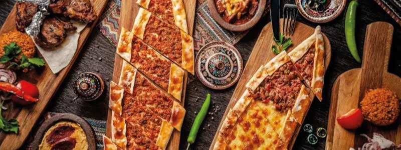
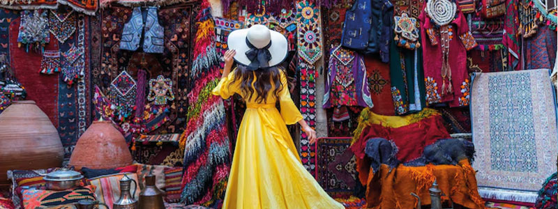

Comida típica en Estambul
En Estambul vas a encontrar platos típicos que no te puedes perder.
Ver más
Arquitectura de Estambul
Conoce la maravillosa arquitectura de Estambul.
Ver más

Planes imperdibles en Estambul
No te puedes ir de Estambul sin antes ver esto.
Ver más